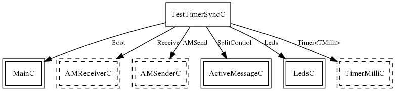

This application sends a single active message broadcast if it has address 0, and then starts a timer at 1Hz. If it has any address other than 0, it starts a timer at 1 Hz upon receiving a broadcast message. The idea is to have one base station with address 0 send out a broadacst message to synchronize itself with all receivers. All Leds from the base station and any receivers of the broadcast should blink together. It uses the radio HIL component ActiveMessageC, and its packets are AM type 240.
